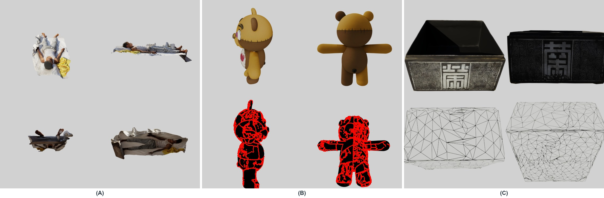

Import asset
Resolve geometry and material inputs with explicit provenance.
Large 3D repositories make it easy to collect assets, but difficult to determine whether they can be reused reliably across scene assembly, editing, rendering, game production, and training-data construction. An asset can look plausible in RGB while hiding disconnected geometry, problematic UV organization, or materials that fail to resolve correctly after import.
We introduce Diagnostic Rendered Evidence (DRE): aligned beauty, wireframe, and UV-seam-plus-wireframe views scored by pass-specific frozen ViT classifiers and combined through late fusion. On 1,234 human-labeled TexVerse assets, nested grouped evaluation achieves 86.36% balanced accuracy and 88.32% bad-asset recall. DRE uses only an imported asset and renderer-derived evidence at inference.
Repository assets are increasingly reused as structured 3D objects rather than static pictures. A convincing preview does not guarantee that a mesh is connected, that its UV organization is workable, or that its materials will survive import into a new pipeline.
The key insight is simple: show the classifier and reviewer the structures they need to judge. Synchronized diagnostic passes expose geometry and UV organization while preserving the same camera poses and surface context as the beauty render.
Appearance evidence captures overall plausibility, textures, and visible render failures.
For every imported asset, DRE renders four synchronized camera poses for three evidence types. A fixed ImageNet-pretrained ViT-B/16 encodes each view. We aggregate each pass with feature-wise means and standard deviations, fit one balanced classifier per evidence type, and combine their probabilities through late fusion.
Resolve geometry and material inputs with explicit provenance.
Beauty, wireframe, and UV-seam-plus-wireframe at four poses.
Pass-specific frozen ViT features and balanced classifiers.
Combine complementary evidence into a final keep/reject decision.
Representation-controlled ablations keep labels, grouped folds, the ViT representation, classifier family, fusion method, and threshold-selection protocol fixed. Changing only the evidence produces large gains over beauty views alone.
Balanced accuracy (%) on grouped outer-fold predictions.
On a separate balanced set of 764 strict-PBR reference assets and rejected assets, DRE retains 80.37% of positive references and recalls 97.38% of negative references.
Reference-label accuracy is not a substitute for independently adjudicated usability labels.
The examples below illustrate complementary failure modes. DRE does not convert seam count, mesh density, or any individual pass into a universal rule; it makes the relevant evidence inspectable in the context of the asset.

The camera-ready release will include stable asset identifiers, final labels, annotation guidelines, grouped evaluation folds, analytical measurements, predictions, and evaluation code. The canonical annotation table contains 1,234 final expert decisions: 866 good and 368 bad.
We will also publish complete model-prediction tables for 647,540 TexVerse assets and 701,144 Objaverse assets. These larger tables contain model-generated labels rather than additional human annotations.
The 764-asset test set will be released first. We will update this page with the training dataset soon.
@inproceedings{dre2026assetusable,
title = {Is This 3D Asset Usable? Beyond the Beauty Render for Asset Curation},
author = {Zawar, Rushikesh and Kim, Vladimir},
booktitle = {Workshop Proceedings},
year = {2026}
}Replace the venue field with the final camera-ready venue metadata.